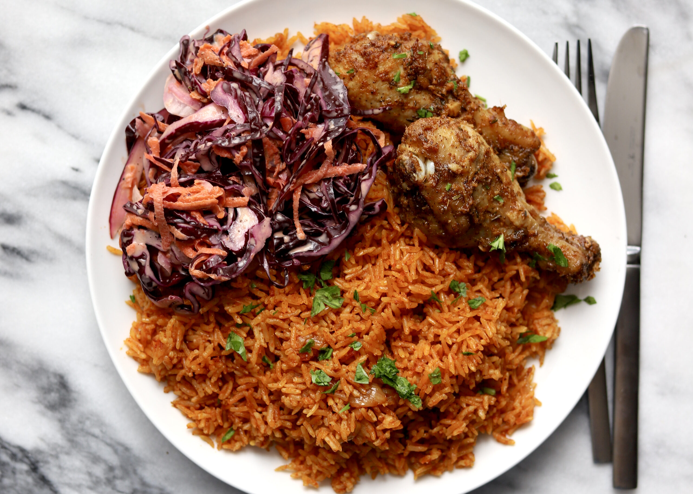

Jollof

Description
Ingredients
- 2 large yellow onions, roughly chopped
- ⅓ cup vegetable oil(80 mL), plus 2 tablespoons, divided
- 14 oz diced tomato(395 g), 2 cans
- 6 oz tomato paste(170 g), 1 can
- 1 habanero pepper
- 2 teaspoons curry powder
- 1 teaspoon garlic powder
- 1 teaspoon ground ginger
- ½ teaspoon mixed dried herbs
- 3 chicken bouillon cubes, crushed
- 2 ½ cups long grain rice(500 g), rinsed
- 1 cup frozen mixed vegetable(150 g)
- 1 ½ cups water(360 mL)